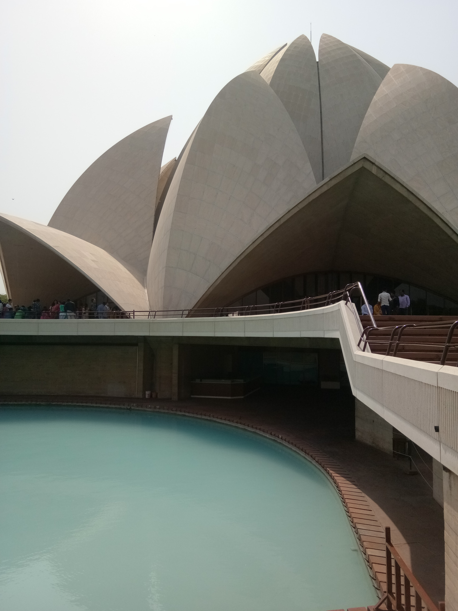
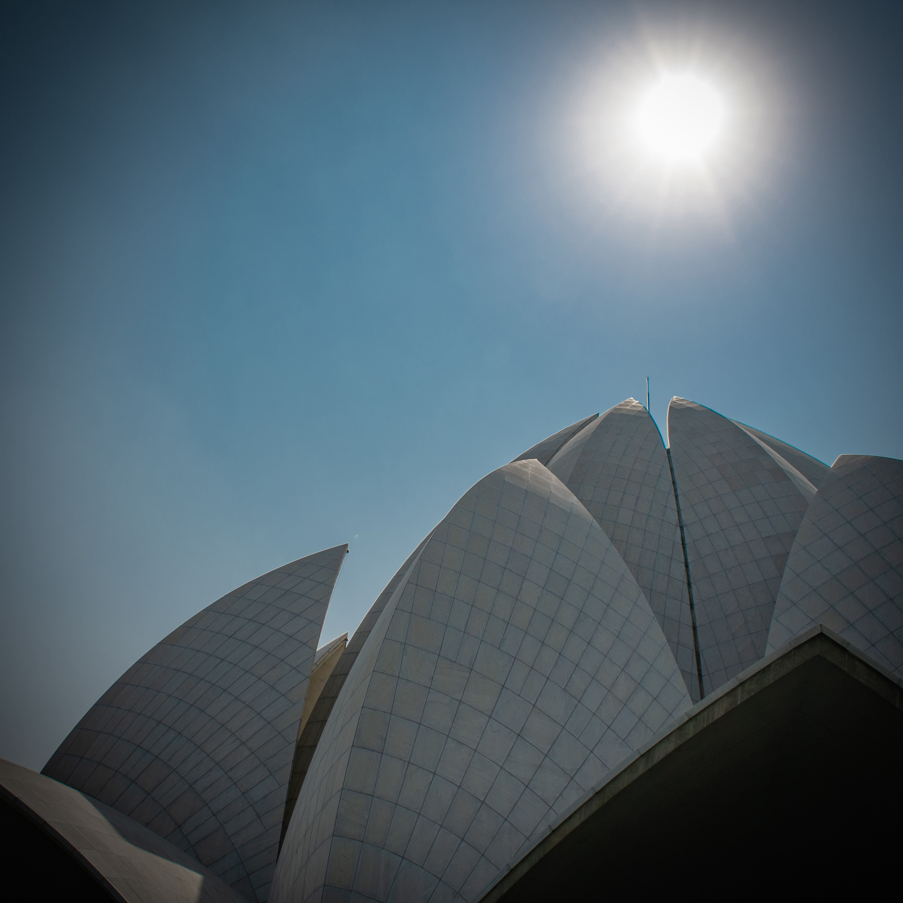
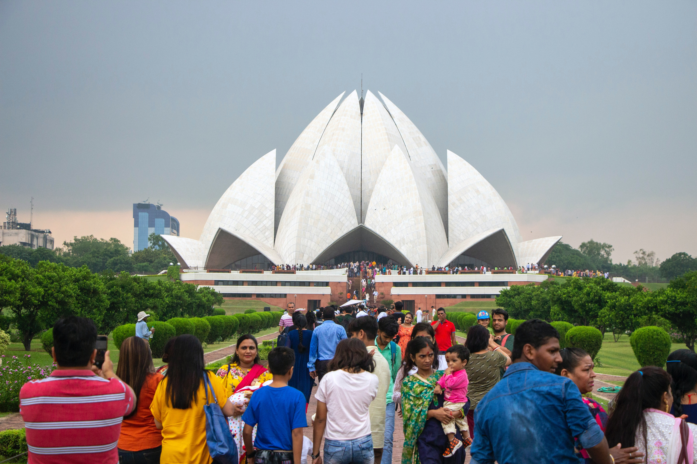

  
The Lotus Temple, located in Delhi, India, is a Baháʼí House of Worship that was dedicated in December 1986. Notable for its flowerlike shape, it has become a prominent attraction in the city. Like all Houses of Worship, the Lotus Temple is open to all, regardless of religion or any other qualification. According to Shoghi Effendi, a Bahá'í temple is a “silent teacher” of the Bahá'í faith. The building is composed of 27 free-standing marble-clad "petals" arranged in clusters of three to form nine sides, with nine doors opening onto a central hall with a height of slightly over 34 meters and a capacity of 2,500 people. The Lotus Temple has won numerous architectural awards and has been featured in many newspaper and magazine articles.[4] A 2001 CNN report referred to it as the most visited building in the world. All Baháʼí Houses of Worship, including the Lotus Temple, share certain architectural elements, some of which are specified by Baháʼí scripture. ʻAbdu'l-Bahá, the son of the founder of the religion, stipulated that an essential architectural character of a House of Worship is a nine-sided circular shape. While all current Baháʼí Houses of Worship have a dome, this is not regarded as an essential part of their architecture. Baháʼí scripture also states that no pictures, statues or images be displayed within the House of Worship and no pulpits or altars be incorporated as an architectural feature (readers may stand behind simple portable lecture stands). Inspired by the lotus flower, the design for the House of Worship in New Delhi is composed of 27 free-standing marble-clad "petals" arranged in clusters of three to form nine sides. The nine doors of the Lotus Temple open onto a central hall 34.3 meters tall that can seat 1,300 people and hold up to 2,500 in all. The surface of the House of Worship is made of white marble from Penteli mountain in Greece, the same marble used in the construction of many ancient monuments (including the Parthenon) and other Baháʼí buildings. Along with its nine surrounding ponds and gardens, the Lotus Temple property comprises 26 acres (105,000 m²; 10.5 ha). Lotus temple is situated near Okhla NSIC and Kalkaji Mandir metro station is just 500 meters away. The temple is located in the village of Bahapur in New Delhi, National Capital Territory of Delhi. The architect was an Iranian, Fariborz Sahba who now lives in La Jolla, California, after living some years in Canada. He was approached in 1976 to design the Lotus Temple and later oversaw its construction. The structural design was undertaken by the UK firm Flint and Neill over the course of 18 months, and the construction was done by ECC Construction Group of Larsen & Toubro Limited[14] at a cost of $10 million. The major part of the funds needed to buy this land was donated by Ardishír Rustampúr of Hyderabad, Sindh (Pakistan), whose will dictated that his entire life savings would go to this purpose. A portion of the construction budget was saved and used to build a greenhouse to study indigenous plants and flowers that would be appropriate for use on the site.